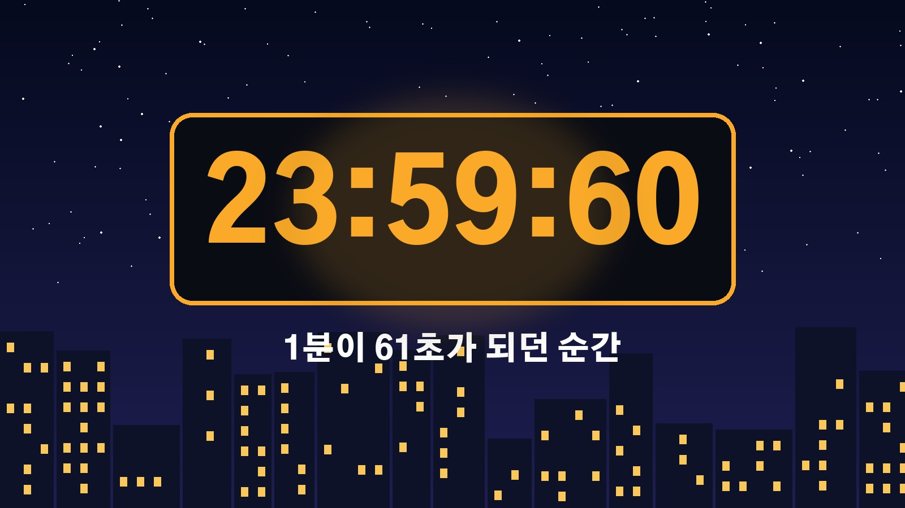

윤초 54년 만에 폐지, 1초를 빼야 할 수도 있던 지구 자전 때문에 세계 표준시 규칙이 바뀐다
1분이 60초가 아니라 61초였던 날이 있었다는 이야기, 들어 보셨나요. 세계 표준시에 가끔 1초를 끼워 넣던 윤초라는 제도 때문인데요, 이 윤초가 54년 만에 없어지게 됐어요. 우리가 보는 시계도 달라지는지, 왜 갑자기 이런 결정이 나왔는지 차근차근 정리해 볼게요.
윤초 폐지, 무엇이 언제부터 바뀌나
국제도량형총회는 현지시간 10월 15일 프랑스 베르사유에서 열린 제28차 회의에서 1972년부터 이어 온 윤초 제도를 없애기로 결의했어요. 새 방식은 2027년 5월 20일부터 적용됩니다.
핵심은 허용 오차를 크게 넓힌 거예요. 지금까지는 지구 자전을 기준으로 한 시간과 원자시계로 정한 세계 표준시가 0.9초 넘게 벌어지지 않도록 1초씩 더하거나 빼 왔는데, 앞으로는 두 시간의 차이를 최대 1시간, 즉 3600초까지 그냥 두기로 했습니다. 원래는 2035년까지 바꾸기로 했던 일정을 8년 앞당긴 결정이에요.
윤초는 왜 있었고 1분이 61초였던 날은
하루 24시간은 원래 지구가 한 바퀴 도는 시간을 기준으로 정했어요. 그런데 지구는 늘 같은 속도로 돌지 않고, 세계 표준시의 기준인 원자시계는 세슘 원자의 일정한 진동으로 시간을 잽니다. 그래서 두 시간 사이에 조금씩 차이가 생기고, 이를 맞추려고 1972년에 윤초를 도입했어요.

그동안 윤초는 모두 27번 있었고, 전부 1초를 더하는 방식이었어요. 1초를 더하는 날에는 밤 11시 59분 59초 다음에 평소에는 없는 59분 60초를 한 번 거치기 때문에 그 1분은 61초가 됩니다. 1초를 뺀 적은 지금까지 한 번도 없었어요.
1초를 빼야 할 수도 있다는 걱정이 앞당긴 결정
일정을 서두른 이유는 최근 지구 자전이 이례적으로 빨라졌기 때문이에요. 지구는 길게 보면 자전이 점점 느려지는 경향인데, 요즘은 오히려 빨라지는 현상이 관측되면서 사상 처음으로 1초를 빼는 음의 윤초가 필요할 수 있다는 이야기가 나왔습니다.
1초를 빼면 밤 11시 59분 58초에서 59초를 건너뛰고 바로 다음 날 0시 0분 0초로 넘어가게 돼요. 한 번도 해 본 적 없는 방식이라 전산망에서 어떤 일이 벌어질지 예측하기 어렵다는 우려가 컸습니다. 이번 표결에 참여한 한국표준과학연구원 박연규 부원장도 세계의 수많은 컴퓨터와 디지털 시스템이 서로 시간을 맞춰 움직이고 있어 1초를 뺐을 때 무슨 일이 생길지 예측하기 어렵다는 취지로 설명했어요.
1초가 왜 그렇게 문제였나
1초를 더하기만 했던 기존 윤초도 말썽을 일으킨 적이 있어요. 2012년 윤초 때는 호주 콴타스항공의 운항에 차질이 생겼고, 레딧 같은 인터넷 서비스에도 장애가 났습니다.
컴퓨터는 거래와 통신을 시간 순서대로 처리하기 때문에 서버끼리 시각이 어긋나면 거래 기록의 순서가 뒤바뀌거나 시간 계산이 틀어질 수 있어요. 매초 엄청난 주문이 오가는 금융 시장, 여러 장비가 같은 시각을 공유해야 하는 이동통신망과 데이터센터, 신호가 도착하는 시간으로 위치를 계산하는 위성항법 시스템이 특히 민감한 분야로 꼽힙니다.
우리가 쓰는 시계와 한국 표준시는 그대로
가장 궁금하실 부분은 일상생활이 달라지느냐일 텐데요, 일반인이 쓰는 시계나 나라별 표준시가 갑자기 바뀌는 건 아니에요. 한국 표준시도 지금처럼 세계 표준시보다 9시간 빠른 체계를 그대로 유지합니다.
그리고 차이를 1시간까지 허용한다고 해서 당장 시계를 1시간씩 옮기는 건 아니에요. 지구 자전의 미세한 변화가 1시간만큼 쌓이려면 아주 오랜 세월이 걸릴 것으로 보여서, 사실상 오랫동안 별도의 시간 조정 없이 원자시계 기준으로 흘러가게 됩니다. 이번 변화는 우리 손목시계보다는 통신망과 금융, 위성항법처럼 아주 정밀하게 시간을 맞춰야 하는 디지털 시설에 직접 영향을 주는 결정이라고 보시면 돼요.
참고한 기사: 조선일보 자전 속도 빨라진 지구, 1초 더하거나 빼던 윤초 폐지(2026.10.17), 지디넷코리아 54년 만에 사라지는 윤초, 세계 표준시 내년부터 바뀐다(2026.10.17), 뉴스웍스 세계 표준시 윤초 폐지, 지구 자전 빨라지자 국제도량형총회 결정(2026.10.18)
태그
윤초 윤초폐지 음의윤초 세계표준시 협정세계시 국제도량형총회 원자시계 지구자전 한국표준시 표준시간